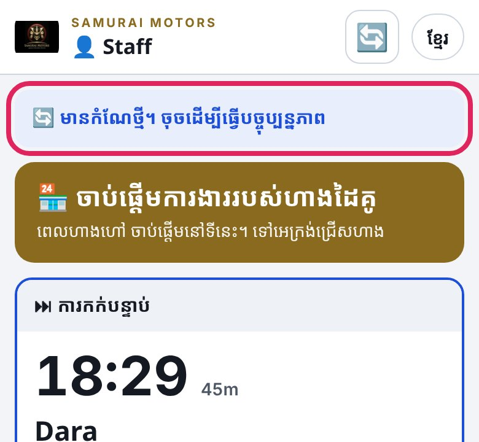
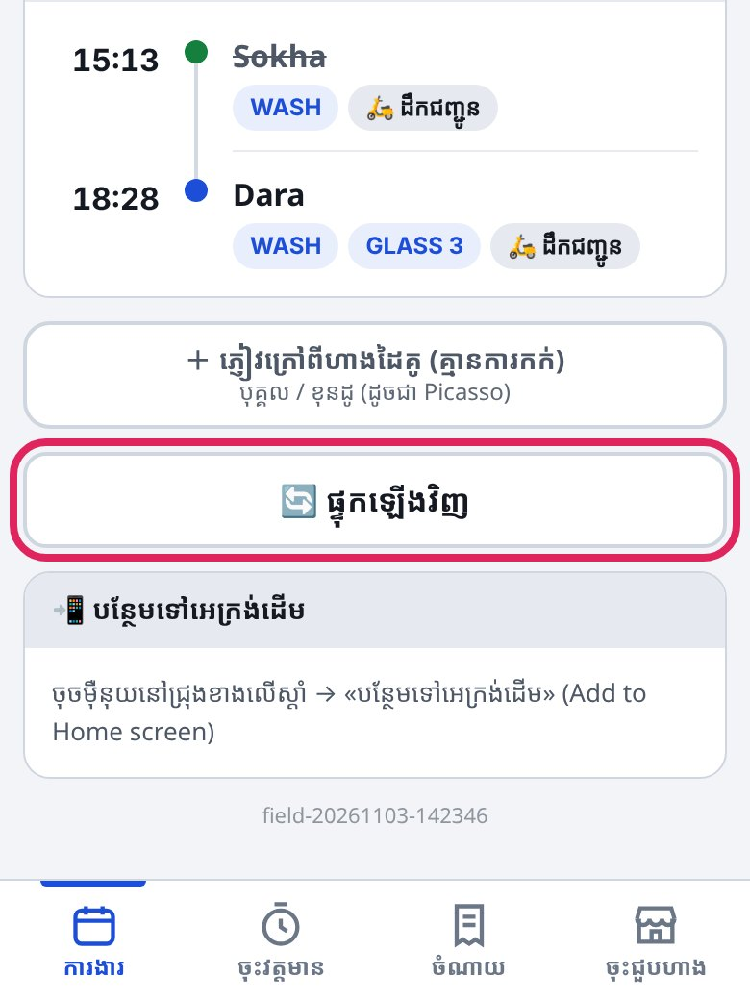
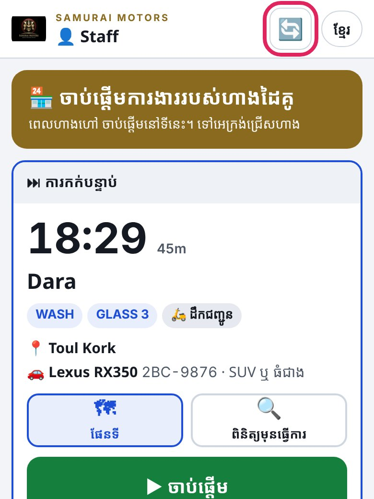
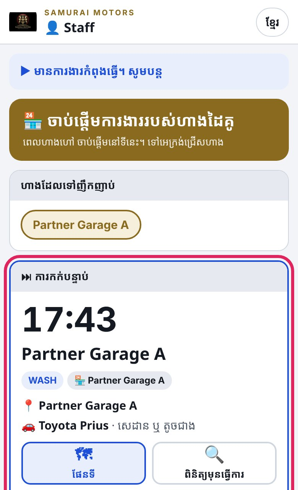
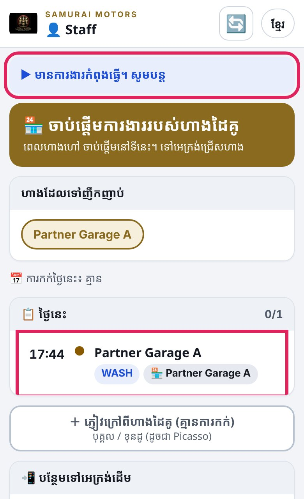
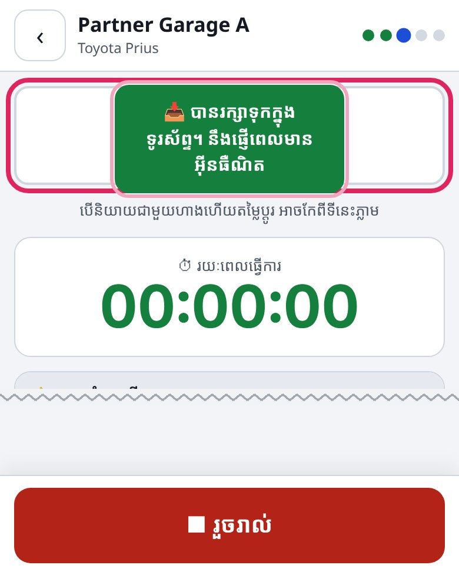
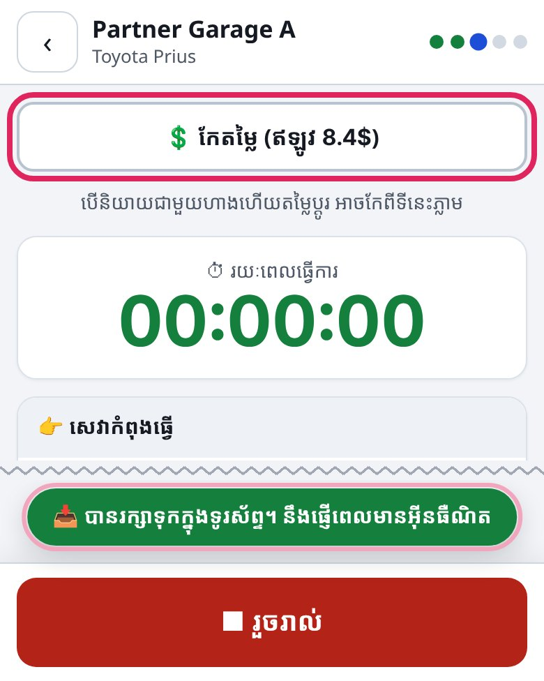

កម្មវិធី «Samurai» — ចំណុចដែលផ្លាស់ប្ដូរក្នុងកំណែថ្មី
現場アプリ «Samurai» — 新しい版で変わったところ
UPDATE
📱
របៀបធ្វើការងារ គឺដូចពីមុន។ យើងបានរៀបចំទីតាំង និងទំហំអ្វីៗលើអេក្រង់ ឱ្យងាយមើល និងងាយចុចជាងមុន។
作業のやり方は今までと同じです。画面の並びと大きさを、見やすく・押しやすくしました。

ពេលឃើញបន្ទះពណ៌ខៀវ «មានកំណែថ្មី។ ចុចដើម្បីធ្វើបច្ចុប្បន្នភាព» សូមចុចវា។ កំណត់ត្រាដែលមិនទាន់បានផ្ញើ នឹងមិនបាត់ទេ។
青い帯「新しい版があります。タップして更新」が出たら、押してください。まだ送っていない記録は消えません。
1
🔄 ផ្ទុកឡើងវិញ នៅជ្រុងខាងស្ដាំខាងលើ🔄 更新は右上
ពីមុន 前

ឥឡូវ 今

ដើម្បីផ្ទុកការកក់ឡើងវិញ សូមចុច 🔄 នៅជ្រុងខាងស្ដាំខាងលើ។ ប៊ូតុង «ផ្ទុកឡើងវិញ» ដែលនៅខាងក្រោម លែងមានហើយ។
予約を読み直すときは、右上の 🔄 を押します。下にあった「更新」ボタンはなくなりました。
2
«ការងាររបស់ហាងដៃគូ» មិនបង្ហាញក្នុង «ការកក់បន្ទាប់»お店の仕事は「次の予定」に出ません
ពីមុន 前

ឥឡូវ 今

«ការកក់បន្ទាប់» បង្ហាញតែការកក់ប៉ុណ្ណោះ។ ដើម្បីបន្តការងាររបស់ហាងដៃគូ សូមចុចបន្ទះពណ៌ខៀវ «មានការងារកំពុងធ្វើ។ សូមបន្ត»។ ការងារនេះក៏មាននៅក្នុងបញ្ជី «ថ្ងៃនេះ» ដែរ។
「次の予定」は予約だけです。お店の仕事の続きは、青い帯「作業中の仕事があります。続けてください」を押します。「今日」の一覧にも出ます。
3
សារជូនដំណឹង បង្ហាញតូចៗនៅខាងក្រោមお知らせは下に小さく
ពីមុន 前

ឥឡូវ 今

សារដូចជា «បានរក្សាទុកក្នុងទូរស័ព្ទ» បង្ហាញនៅជាប់ពីលើប៊ូតុងខាងក្រោម។ សារនេះនឹងមិនបាំងតម្លៃ ឬរូបថតទេ។ ប៊ូតុង «កែតម្លៃ» ឥឡូវមានតែមួយបន្ទាត់ ហើយងាយមើលជាងមុន។
「スマホに保存しました」などのお知らせは、下のボタンのすぐ上に出ます。値段や写真を隠しません。「値段を直す」ボタンも、いまは1行で見やすくなりました。
Samurai Motors · Field App Update1 / 3